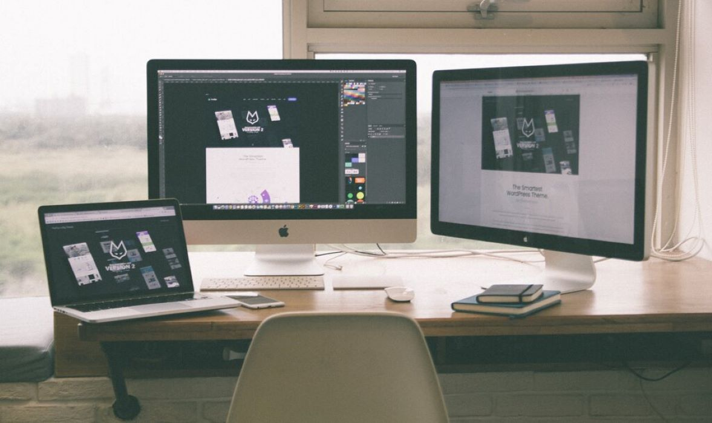

Without any coding knowledge, our website's award-winning designs are simple to modify. Reducing downtime and speeding up all of your tasks. The greatest part is that everything will be taken care of. Everything is available here, including hosting and unique domain names.

A website is not a temple made of stone that will stand for centuries. It is active and constantly shifting. Even after it has been set up, you still need to make adjustments, like changing the prices and expanding your catalog. Websites for web stores are user-friendly and simple to update. You'll save time and money by doing this. There is no need to contract a professional to make the adjustments for you. It's up to you to use that authority.
Every use scenario is catered for on Web Store Sites. You can depend on Web Store sites to function and appear the same whether they are viewed on an 8k desktop device or a 5-inch mobile screen. You don't need to optimize the site actively. It will be carried out automatically, and you can view a preview of how each site will appear on various devices.
All of your numbers are readily available and logically organized. Web Store will categorize your data in an understandable manner. You can observe how users interact with the website and how changes you make impact traffic in real-time. There is no need to employ a data analyst because you already have all the power and knowledge you need.